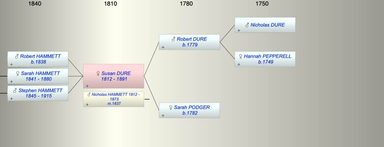
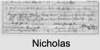

| [Index] |
| Susan DURE (1812 - 1891) |
|  |
|  |
| b. abt 1812 |
| m. 10 Nov 1837 Nicholas John HAMMETT (1812 - 1873) at Plympton |
| d. 1891 at Plympton St Mary aged 79 |
| Near Relatives of Susan DURE (1812 - 1891) | ||||||
| Relationship | Person | Born | Birth Place | Died | Death Place | Age |
| Grandfather | Nicholas DURE | |||||
| Grandmother | Hannah PEPPERELL | 1749 | Slapton | |||
| Father in Law | Stephen HAMMETT | abt 1790 | ||||
| Mother in Law | Agnes FURSLAND | abt 1790 | ||||
| Father | Robert Pepperell DURE | 1779 | Stokenham, Devon | |||
| Mother | Sarah PODGER | 1782 | Langport, Somerset | |||
| Self | Susan DURE | abt 1812 | 1891 | Plympton St Mary | 79 | |
| Husband | Nicholas John HAMMETT | 1812 | Plymouth | 1873 | Plympton St Mary | 61 |
| Son | Robert H HAMMETT | 1838 | Stokenham | |||
| Daughter | Sarah Agnes HAMMETT | 1841 | Plymton | 1880 | 39 | |
| Son | Stephen HAMMETT | 16 Jun 1845 | Plympton St Mary | 29 Apr 1915 | Plymouth | 69 |
| Brother | Robert DURE | 1816 | Langport | 16 Jun 1866 | Coleridge, Devon | 50 |
| Brother | William DURE | 1816 | ||||
| Daughter in Law | Elizabeth Downing OLIVER | 1834 | Exeter | 1926 | Plymouth | 92 |
| Son in Law | Charles BREWER | 1851 | Starcross | |||
| Daughter in Law | Catherine Julyan COOPER | 1837 | Falmouth | 05 May 1923 | Plymouth | 86 |
| Granddaughter | Living or Recently Deceased | |||||
| Grandson | George Goodwin BREWER | 27 Jan 1886 | Teignmouth | 1894 | 8 | |
| Granddaughter | Living or Recently Deceased | |||||
| Granddaughter | Living or Recently Deceased | |||||
| Grandson | Stewart G BREWER | 05 Jul 1890 | Teignmouth | 1892 | 2 | |
| Granddaughter | Susan Annie HAMMETT | 1871 | Plymouth | 1872 | Plymouth | 1 |
| Granddaughter | Living or Recently Deceased | |||||
| Niece | Eliz DURE | 1841 | South Pool, Devon | |||
| Niece | Mary Grace Hurley DURE | 1843 | Stokenham | |||
| Nephew | John Harley DURE | 1845 | Stokenham | |||
| Nephew | Thomas WHITE | 1843 | Plymouth | |||
| Niece | Agnes P WHITE | 1848 | Stoke Damerel, Plymouth | |||
| Sister in Law | Agnes HAMMETT | 1814 | Plymouth | 07 Jun 1866 | Plymouth | 52 |
| Sister in Law | Elizabeth HAMMETT | 1817 | Plymouth | |||
| Sister in Law | Elizabeth HARLEY | |||||
| Events in Susan DURE (1812 - 1891)'s life | |||||
| Date | Age | Event | Place | Notes | Src |
| abt 1812 | Susan DURE was born | various | |||
| 10 Nov 1837 | 25 | Married Nicholas John HAMMETT (aged 25) | Plympton | Note 1 | |
| 1838 | 26 | Birth of son Robert H HAMMETT | Stokenham | ex 1891 census | |
| 1841 | 29 | Birth of daughter Sarah Agnes HAMMETT | Plymton | Note 2 | |
| 16 Jun 1845 | 33 | Birth of son Stephen HAMMETT | Plympton St Mary | Note 3 | |
| 1873 | 61 | Death of husband Nicholas John HAMMETT (aged 61) | Plympton St Mary | Note 4 | |
| 1880 | 68 | Death of daughter Sarah Agnes HAMMETT (aged 39) | Note 5 | ||
| 1891 | 79 | Susan DURE died | Plympton St Mary | Note 6 | |
| Death of father Robert Pepperell DURE | Note 7 | ||||
| Personal Notes: |
|
1851 census living Plymton St Mary Susan 37 born Bristol, Sarah born Cornwood Devon and Stephen 5 born Plymton St Mary.
1861 census Susan Hammett 38 gardener’s wife born Stockingham Devon, Sarah dau 19 born Cornwood Devon, Stephen son 15 born Plymton St Mary . Cornwood is near Plympton There was a Susanna Dure buried Stokenham 29 Jan 1812 |
| Created on a Mac™ using iFamily for Mac™ on 15 Sep 2023 |